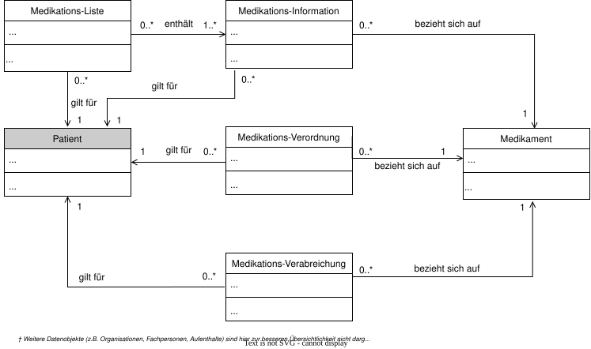
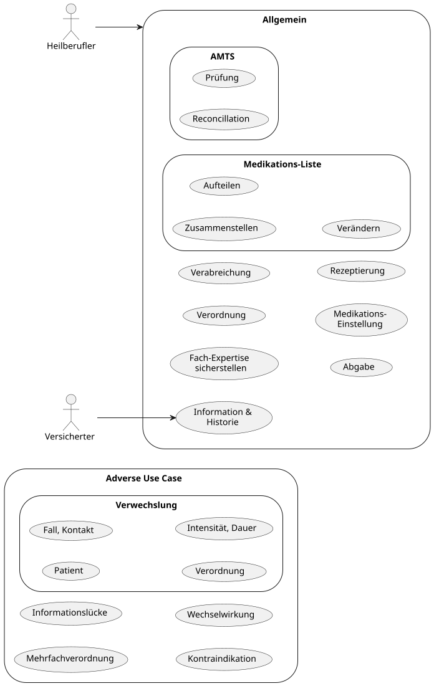

http://ihe-d.de/CodeSystems/AerztlicheFachrichtungen
http://standardterms.edqm.eu
https://fhir.kbv.de/CodeSystem/KBV_CS_Base_Role_Care
https://gematik.de/fhir/isik/CodeSystem/ISiKMedikationsartCS
This fragment is not visible to the reader
Error parsing IP fragment: unable to parse character reference ' Conditions in https://www.edqm.eu/en/standard-terms-database'' (last text = ' ' at line 46 column 217
| Type | Reference | Content |
|---|---|---|
| web | gemspec.gematik.de |
Ein ISiK Akteur darf sinnvolle Limits für die Einschränkung der Ergebnismenge definieren, wie die Forcierung von Pagination über den Parameter _count
oder die Einschränkung des Zeitraums der zurückgegebenen Ressourcen über den Parameter _since
. Hierbei sollten die Hinweise und vorgaben der ISiK-Spezifikation zu Performance
beachtet werden.
|
| web | fhir.kbv.de |
Code defined by a terminology system
Binding: https://fhir.kbv.de/ValueSet/KBV_VS_Base_Role_Care ( required ) |
| web | gematik.de |
IG © 2026+ gematik GmbH
.
Package medikation#6.0.0 based on FHIR 4.0.1
.
Generated 2026-09-02
Links: Table of Contents | QA Report |
| web | www.who.int | Die automatisierte Medikamentenvergabe im Krankenhaus stellt einen komplexen, sicherheitskritischen Prozess dar, an dem mehrere Berufsgruppen und Systeme beteiligt sind. Medikationsfehler zählen weltweit zu den häufigsten vermeidbaren unerwünschten Ereignissen im stationären Bereich und können schwerwiegende Folgen für Patientinnen und Patienten haben [ WHO, 2017 ; Tariq et al., 2024 ]. Die Digitalisierung und Automatisierung dieses Prozesses bietet ein großes Potenzial, solche Fehler systematisch zu verhindern [ Tariq et al., 2024 ]. |
| web | ig.fhir.de | Die Abbildung und fachliche Spezifikation von Bedarfsmedikation wird derzeit im Implementierungsleitfaden FHIR Medication IG Deutschland erarbeitet. Die dort beschriebenen Konzepte und Festlegungen können als fachliche und technische Guidance für die Umsetzung von Bedarfsmedikation im Kontext dieses Implementierungsleitfadens herangezogen werden. |
| web | gematik.de |
Jede Instanz eines bestätigungsrelevanten Systems MUSS an ihrem Endpunkt eine CapabilityStatement-Ressource bereitstellen.
Hierzu MUSS die capabilities-Interaktion gemäß FHIR-Kernspezifikation
unterstützt werden.
Der MODE
-Parameter kann ignoriert werden. Das CapabilityStatement in dieser Spezifikation stellt die Anforderungen seitens der gematik dar ( kind = requirements
).
Zur Unterscheidung von Rollen, die erfüllt werden MÜSSEN gegenüber jenen, die erfüllt werden KÖNNEN,
wird die CapabilityStatement-Imports-Expectation-Extension
mit den möglichen Werten 'SHALL' (=MUSS) 'SHOULD' (=SOLL) 'MAY' (=KANN) 'SHOULD-NOT' (=SOLL NICHT) verwendet.
|
| web | ig.fhir.de | Die Abbildung und fachliche Spezifikation von Infusionen wird derzeit im Implementierungsleitfaden FHIR Medication IG Deutschland erarbeitet. Die dort beschriebenen Konzepte und Festlegungen können als fachliche und technische Guidance für die Umsetzung von Infusionen im Kontext dieses Implementierungsleitfadens herangezogen werden. |
| web | gemspec.gematik.de | Zu den betrachteten Spezifikationen und Anwendungen zählen insbesondere der digital gestützte Medikationsprozess (dgMP) , der ePA Medication Service mit der elektronischen Medikationsliste (eML), das KBV eRezept , der MedicationDE-Implementierungsleitfaden mit den Profilen DosageDE und TimingDE sowie der Medizininformatik-Initiative Kerndatensatz Modul Medikation . Die jeweiligen Abschnitte verweisen auf die entsprechenden Spezifikationen und beschreiben die relevanten Unterschiede aus Sicht von ISiK-Medikation. |
| web | gemspec.gematik.de | Zu den betrachteten Spezifikationen und Anwendungen zählen insbesondere der digital gestützte Medikationsprozess (dgMP) , der ePA Medication Service mit der elektronischen Medikationsliste (eML), das KBV eRezept , der MedicationDE-Implementierungsleitfaden mit den Profilen DosageDE und TimingDE sowie der Medizininformatik-Initiative Kerndatensatz Modul Medikation . Die jeweiligen Abschnitte verweisen auf die entsprechenden Spezifikationen und beschreiben die relevanten Unterschiede aus Sicht von ISiK-Medikation. |
| web | ig.fhir.de | Zu den betrachteten Spezifikationen und Anwendungen zählen insbesondere der digital gestützte Medikationsprozess (dgMP) , der ePA Medication Service mit der elektronischen Medikationsliste (eML), das KBV eRezept , der MedicationDE-Implementierungsleitfaden mit den Profilen DosageDE und TimingDE sowie der Medizininformatik-Initiative Kerndatensatz Modul Medikation . Die jeweiligen Abschnitte verweisen auf die entsprechenden Spezifikationen und beschreiben die relevanten Unterschiede aus Sicht von ISiK-Medikation. |
| web | www.medizininformatik-initiative.de | Zu den betrachteten Spezifikationen und Anwendungen zählen insbesondere der digital gestützte Medikationsprozess (dgMP) , der ePA Medication Service mit der elektronischen Medikationsliste (eML), das KBV eRezept , der MedicationDE-Implementierungsleitfaden mit den Profilen DosageDE und TimingDE sowie der Medizininformatik-Initiative Kerndatensatz Modul Medikation . Die jeweiligen Abschnitte verweisen auf die entsprechenden Spezifikationen und beschreiben die relevanten Unterschiede aus Sicht von ISiK-Medikation. |
| web | ig.fhir.de | Die Kompatibilität mit dem dgMP wird insbesondere dadurch unterstützt, dass ISiK-Medikation und die im dgMP verwendeten Profile auf Profilierungen aus dem MedicationDE-Implementierungsleitfaden aufbauen. ISiK-Medikation verwendet für strukturierte Dosierungsinformationen das Profil DosageDE sowie die darin verwendeten Strukturen zur Abbildung von Zeitangaben. Im dgMP wird hierfür das darauf aufbauende Profil DosageDgMP verwendet. Damit besteht für strukturierte Dosierungsinformationen eine gemeinsame Profilierungsgrundlage, auch wenn die Profile nicht identisch sind. |
| web | semver.org | Im Rahmen der ISiK-Veröffentlichungen wird das Semantic Versioning verwendet. |
| web | github.com |
improve
Update der Dependency auf die neue Basisprofile-DE version 1.6.0 für alle Module https://github.com/gematik/spec-ISiK-Basismodul/pull/1272
|
| web | github.com |
improve
Guidance für ISiKMedikament.amount verbessert https://github.com/gematik/spec-ISiK-Basismodul/pull/1243
|
| web | github.com |
fix
Hinzufügen der Rulesets CommonSearchParameters
und OptionalTagSearchParameter
zu den Rollen CapabilityStatements https://github.com/gematik/spec-ISiK-Basismodul/pull/1161
- analog zu TC 5.1.2 siehe https://github.com/gematik/spec-ISiK-Basismodul/pull/1158
|
| web | github.com |
fix
Hinzufügen der Rulesets CommonSearchParameters
und OptionalTagSearchParameter
zu den Rollen CapabilityStatements https://github.com/gematik/spec-ISiK-Basismodul/pull/1161
- analog zu TC 5.1.2 siehe https://github.com/gematik/spec-ISiK-Basismodul/pull/1158
|
| web | github.com |
fix
Fehlendes MS zum ISiKATCCoding hinzugefügt, die Version war bisher schon 1..1, aber es fehlte die MS-Definition https://github.com/gematik/spec-ISiK-Basismodul/pull/1155
|
| web | github.com |
improve
QA-Verbesserungen: IG-Publisher-Parameter hinzugefügt, ignoreWarnings.txt eingeführt, Umstellung auf deutsche Display-Validierung https://github.com/gematik/spec-ISiK-Basismodul/pull/1190
|
| web | github.com |
fix
CapabilityStatement FormDefinitionsVerwalter und ISiKMedikationsInformation Beispiel korrigiert https://github.com/gematik/spec-ISiK-Basismodul/pull/1190
|
| web | github.com |
improve
Entfernen der replaces
-Extension ( extension.medicationRequestReplaces
) in Medikation-Verordnung und Medikation-Statement; in der Medikation-Verordnung wird stattdessen MedicationRequest.priorPrescription
verwendet. ( chat.fhir.org
) https://github.com/gematik/spec-ISiK-Basismodul/pull/1192
|
| web | github.com |
documentation
Neue Use-Case-Seiten Bedarfsmedikation
und Infusionen
im Menü ergänzt https://github.com/gematik/spec-ISiK-Basismodul/pull/1204
|
| web | github.com |
improve
Gemeinsame Auslagerung der DosageDE
-Vorgaben für ISiKMedikationsVerordnung und ISiKMedikationsInformation in ein RuleSet; Bedarfsmedikation wird auf asNeededBoolean
eingeschränkt, die R5-Backport-Extension Dosage.asNeededFor
lokal ergänzt. https://github.com/gematik/spec-ISiK-Basismodul/pull/1177
|
| web | github.com |
documentation
Guidance zur Verwendung von List.mode (snapshot vs. working) in ISiKMedikationsListe anhand von Use-Cases ergänzt https://github.com/gematik/spec-ISiK-Basismodul/pull/1194
|
| web | github.com |
fix
Erweiterung der ISiK eigenen Codesysteme um die Information zur Sprache https://github.com/gematik/spec-ISiK-Basismodul/pull/1214
|
| web | github.com |
documentation
Aktualisierung der Seite zur Kompatibilität des Medikationsmoduls https://github.com/gematik/spec-ISiK-Basismodul/pull/1241
|
| web | github.com |
improve
Performance und Paging-Anforderungen in den übergreifenden Festlegungen eingebracht (gilt für alle Module) https://github.com/gematik/spec-ISiK-Basismodul/pull/1068
|
| web | github.com |
fix
Schwächung der Verpflichtung zur Umsetzung des Suchparameters '_tag' von SHALL
zu MAY
- analog zu TC 5.1.2 https://github.com/gematik/spec-ISiK-Basismodul/pull/1040
|
| web | github.com |
improve
Verpflichtende Einführung des Suchparameters _lastUpdated
https://github.com/gematik/spec-ISiK-Basismodul/pull/1053
|
| web | github.com |
improve
Implicit Rules auf 0..0 beschränkt https://github.com/gematik/spec-ISiK-Basismodul/pull/1075
|
| web | github.com |
documentation
Trennung der lesenden und schreibenden Interaktionen im Capability Statement als Refactoring https://github.com/gematik/spec-ISiK-Basismodul/pull/1088
|
| web | github.com |
improve
Ressourcen Referenzen in den FSH Dateien wurden auf das Format
Reference(RessourcenNamen)
vereinheitlicht. Hierdurch wurden teilweise das Referenzziel
angepasst (falls es keine Instanz der Zielinstanz gab). https://github.com/gematik/spec-ISiK-Basismodul/pull/929
|
| web | github.com |
documentation
Link zu Dosierungsbeispielen im IG
Medikation https://github.com/gematik/spec-ISiK-Basismodul/pull/882
|
| web | github.com |
documentation
Erläuterung zur Nutzung von MedicationRequest.status für die Umsetzung asynchroner Prüfung im empfangenden System https://github.com/gematik/spec-ISiK-Basismodul/pull/807
|
| web | github.com |
documentation
Erläuterung für die Umsetzung der Pausierung einer Medikation https://github.com/gematik/spec-ISiK-Basismodul/pull/803
|
| web | github.com |
improve
id-Elemente sind in allen
Profilen dokumentiert und als bedingtes Pflicht-/MS-Feld gekennzeichnet. https://github.com/gematik/spec-ISiK-Basismodul/pull/799
|
| web | github.com |
documentation
Rendering der im Modul verwendeten ValueSets https://github.com/gematik/spec-ISiK-Basismodul/pull/802
|
| web | github.com |
documentation
Dokumentation der Suchparameter (Beispiele) in CpS überführt. Darüber hinaus wurden einige Suchparameter, aus Stufe 3 in Stufe 5 übernommen https://github.com/gematik/spec-ISiK-Basismodul/pull/809
|
| web | github.com |
improve
Öffnung der Kardinalität für ATC und PZN Kodierung, sodass nun eine Mehrfachkordierung möglich ist. https://github.com/gematik/spec-ISiK-Basismodul/pull/737
|
| web | github.com |
improve
MedicationRequest.dosageInstruction.timing.repeat.bounds[x]:boundsRange - Der Datentyp
boundsRange wurde als Must-Support entfernt, da er in der praktischen Verordnung medizinischer
Therapien nur in sehr seltenen Spezialfällen Anwendung
findet. https://github.com/gematik/spec-ISiK-Basismodul/pull/728
|
| web | github.com |
improve
Das Element MedicationAdministration.request im Profil ISiKMedikationsVerabreichung
wurde als eingeschränktes Must-Support gekennzeichnet, da die Angabe der zugrunde liegenden
Verordnung fachlich relevant ist, aber nicht in allen Systemen strukturell abbildbar. https://github.com/gematik/spec-ISiK-Basismodul/pull/734
|
| web | github.com |
improve
Verbesserung der Beschreibung des ISiKMedicationList-Profils: klarere Abgrenzung zur
ePA/eMP und präzisere Darstellung der enthaltenen Informationen
(MedicationStatements). https://github.com/gematik/spec-ISiK-Basismodul/pull/733
|
| web | github.com |
improve
ISiKMedikationsVerordnung: Kommentar zu priorPrescription hinzugefügt und Definitionen
in den Kommentaren beider Elemente (priorPrescription und extension.medicationRequestReplaces)
sprachlich und fachlich überarbeitet. https://github.com/gematik/spec-ISiK-Basismodul/pull/736
|
| web | github.com |
improve
Überarbeitung von Akteuren und Rollen, dabei Procedure-Interaktionen für Akteur im Kontext von AMTS eingeführt und List-Interaktionen sowie Interaktionen auf ISiKSchwangerschaftErwarteterEntbindungstermin für AMTS eingeführt + Refactoring Rollen https://github.com/gematik/spec-ISiK-Basismodul/pull/597
|
| web | github.com |
documentation
Migration des IG auf die neue IG Struktur basierend auf FQL Templates, die für ISiK-Basis erstellt wurden https://github.com/gematik/spec-ISiK-Medikation/pull/171
|
| web | github.com |
improve
Klarstellung zu übergreifenden Festlegungen https://github.com/gematik/spec-ISiK-Medikation/pull/168
|
| web | github.com |
improve
Möglicher Breaking Change für Clients: Änderung (Schwächung) der MS-Definition für .reasonCode und reasonReference für MedicationAdministration und MedicationStatement https://github.com/gematik/spec-ISiK-Medikation/pull/140
|
| web | github.com |
improve
Klärung zur Nutzung der Zeit-Elemente in ISiKMedikationsInformation -und ISiKMedikationsVerabreichung https://github.com/gematik/spec-ISiK-Medikation/pull/154
|
| web | github.com |
improve
Klarstellung zum Umgang mit Freitext-Dosierungsinformationen für empfangende Systeme https://github.com/gematik/spec-ISiK-Medikation/pull/155
|
| web | github.com |
fix
Korrektur der Description & Status des MedicationQuantity Profils https://github.com/gematik/spec-ISiK-Medikation/pull/141
|
| web | github.com |
documentation
Dokumentation für MS-Flags https://github.com/gematik/spec-ISiK-Medikation/pull/139
|
| web | github.com |
improve
Formulierungsänderung zur Nutzung von Profilen aus der Basis https://github.com/gematik/spec-ISiK-Medikation/pull/158
|
| web | github.com |
improve
Die Verbindlichkeit des Suchparameters subject
wurde von SHALL auf MAY reduziert, da der Suchparameter patient
für ISiK-Zwecke ausreichend ist. Die Verbindlichkeit von Include und RevInclude wurde von SHALL auf MAY reduziert, außer bei den Parameter patient
und encounter
, da diese für ISiK-Zwecke ausreichend sind. https://github.com/gematik/spec-ISiK-Medikation/pull/156/files
|
| web | github.com |
improve
MS für ISiKMedikationsVerordnung.reasonReference & reasonCode hinzugefügt, um diese Elemente über alle Medication-Ressourcen hinweg zu vereinheitlichen https://github.com/gematik/spec-ISiK-Medikation/pull/161
|
| web | github.com |
fix
Capability Statement Korrektur des Suchparameter-Typs und weitere Fixes für Beispiele https://github.com/gematik/spec-ISiK-Medikation/pull/148
|
| web | github.com |
improve
Hinweis zur Kontextherstellung https://github.com/gematik/spec-ISiK-Medikation/pull/167
|
| web | github.com | Entfernen von MS von .id der Ressourcen https://github.com/gematik/spec-ISiK-Medikation/pull/122 |
| web | github.com | Klärung Dosis-Rate Quantity und Ratio (Beispiele, Must-Support) https://github.com/gematik/spec-ISiK-Medikation/pull/124/files |
| web | github.com | Entfernen der WG14 Kodierung, Hinzufügen eines SimpleQuantity Profiles, Update der Abhängigkeit auf IPS 1.1.0, Hinzufügen eines SCT Slices zu Medikationsoprofilen, bei Medication.amount (Ratios) numerator und denominator auf 1..1 https://github.com/gematik/spec-ISiK-Medikation/pull/123 |
| web | github.com | Entfernen von MS von MedicationStatement.partOf https://github.com/gematik/spec-ISiK-Medikation/pull/126 |
| web | github.com |
improve
Update dependency with Basis: https://github.com/gematik/spec-ISiK-Medikation/pull/102/commits/039654b03d5b159ed258c35b48c37cd2db3e4a81
|
| web | github.com |
improve
sentence on ISIKBasis Ressource usage by @f-peverali in https://github.com/gematik/spec-ISiK-Medikation/pull/103
|
| web | gemspec.gematik.de | Es gelten grundsätzlich die Allgemeinen Hinweise zur REST API aus dem Basismodul . |
| web | gemspec.gematik.de | Hinweis: Zur Umsetzung der Funktionalität zum Dokumentenaustausch gemäß ISiK ist der entsprechende Implementation Guide zum Modul Dokumentenaustausch zu beachten. |
| web | gemspec.gematik.de | Weitere Hinweise zu den Abgrenzungen der Begrifflichkeiten Fall und Kontakt finden sie unter Fall-Begriff in ISiK . |
| web | www.medizininformatik-initiative.de | Profil Kontakt mit einer Gesundheitseinrichtung der Medizininformatik-Initiative |
| web | service.gematik.de | Hinweise zu Inkompatibilitäten können über die Portalseite gemeldet werden. |
| web | ncpdp.org | Mapping to NCPDP SCRIPT 10.6 |
| web | gemspec.gematik.de | Für das Profil ISiKMedikament wird eine größtmögliche Kompatibilität mit dem Profil epa-medication der gematik angestrebt. Ziel ist insbesondere eine vergleichbare semantische Struktur zur Unterstützung interoperabler Nutzungsszenarien. |
| web | gematik.de | Begründung MS: Die Verlinkung auf eine Patienten-Ressource dient der technischen Zuordnung der Dokumentation zu einem Patienten und ermöglicht wichtige API-Funktionen wie verkettete Suche, (Reverse-)Include etc. Im ISik Kontext MUSS die referenzierte Ressource konform zu ISiKPatient sein. Jenseits von ISiK KÖNNEN weitere Instanzen mit anderen Profilen referenziert werden. |
| web | gematik.de | Begründung MS: Die Verlinkung auf eine Encounter-Ressource dient der technischen Zuordnung der Dokumentation zu einem Aufenthalt und ermöglicht wichtige API-Funktionen wie verkettete Suche, (Reverse-)Include etc. Im ISik Kontext MUSS die referenzierte Ressource konform zu ISiKKontaktGesundheitseinrichtung sein. Jenseits von ISiK KÖNNEN weitere Instanzen mit anderen Profilen referenziert werden. |
| web | ig.fhir.de | Hinweis: Zahlreiche Beispiele zur Dosierungsanweisung sind im Implementierungsleitfaden Medikament von HL7 Deutschland dokumentiert. |
| web | gemspec.gematik.de | Hinweis: Diese Festlegung folgt und spezifiziert folgende MS-Festlegung aus dem ISiK Basismodul : 'Systeme KÖNNEN es darüber hinaus ermöglichen, dass die jeweiligen Informationen vom Anwender ergänzt oder editiert werden.' |
| web | gemspec.gematik.de | Dieses und untergeordnete Elemente SOLLEN bei einem erfolgten Patient merge entsprechend der Festlegungen unter Patient-merge befüllt werden. Das Element dient der Unterstützung der Patient merge Notification. Diese ist für den Akteur 'Subscription Server' des Subscription-Moduls verpflichtend; im Rahmen des Bestätigungsverfahrens zum Basismodul wird das Element nicht geprüft. |
| web | fhir.kbv.de | Profil KBV_PR_Base_Patient der KBV Basisprofile |
| web | www.medizininformatik-initiative.de | Profil Patient der MI-Initiative |
| web | gematik.de | Profil TIPatient der gematik |
| web | gematik.de | Profil EPAPatient der gematik : In ISiK ist die Angabe einer KVNR nicht verpflichtend, da in vielen Use Cases bereits eine PID ausreichend ist. Außerdem ist in ISiK keine verpflichtende Versionierung über meta.versionId vorgesehen. |
| web | gemspec.gematik.de | Dieses und untergeordnete Elemente SOLLEN bei einem erfolgten Patient merge entsprechend der Festlegungen unter Patient-merge befüllt werden. Das Element dient der Unterstützung der Patient merge Notification. Diese ist für den Akteur 'Subscription Server' des Subscription-Moduls verpflichtend; im Rahmen des Bestätigungsverfahrens zum Basismodul wird das Element nicht geprüft. |
| web | ig.fhir.de | Im Krankenhaus ist die lebenslange Arztnummer der Ärzte bekannt und MUSS zur eindeutigen Identifikation eines Arztes bereitgestellt werden. Hinweise: Siehe Beschreibung der Deutschen Basisprofile Während die Deutschen Basisprofile hier die Abkürzung LANR verwenden, ist im KBV-Kontext das Akronym ANR gebräuchlich. Die Bezeichnung des Slices hat jedoch keinerlei Auswirkungen auf die Kompatibilität. |
| web | fhir.kbv.de | Zur Kodierung der Qualifikation ist das entsprechende ValueSet der KBV zu empfehlen. |
| web | www.omg.org | ServD |
| web | fhir.kbv.de | Profil KBV_PR_Base_Practitioner der KBV Basisprofile . |
| web | gematik.de | Profil TIPractitioner der gematik |
| web | fhir.kbv.de |
The codes SHALL be taken from For codes, see
https://fhir.kbv.de/ValueSet/KBV_VS_Base_Role_Care
( required to https://fhir.kbv.de/ValueSet/KBV_VS_Base_Role_Care
)
|
| web | fhir.kbv.de |
The codes SHALL be taken from https://fhir.kbv.de/ValueSet/KBV_VS_Base_Role_Care
( required to https://fhir.kbv.de/ValueSet/KBV_VS_Base_Role_Care
)
|
| web | fhir.kbv.de | https://fhir.kbv.de/ValueSet/KBV_VS_Base_Role_Care |
| web | gemspec.gematik.de | Es gelten die Festlegungen aus dem Modul ISiK ISiK Basis . |
| web | gemspec.gematik.de | Der Use-Case zum Thema Arzneimitteltherapiesicherheit (AMTS) wurde in einem eigenen Implementation Guide ausgelagert. Der Implementation Guide ist über folgenden Link erreichbar: AMTS Implementierungsleitfaden |
| web | fhir.de | ISiK vereint hierbei das ValueSet KontaktArtDe aus dem deutschen Basisprofil und die übergangsweise hinzugefügten Codes für den ambulanten Kontakt im Krankenhaus. Dieses ValueSet ist als Übergangslösung zu verstehen, da die Inhalte beim TC Terminologien von HL7 eingebracht sind und sobald sie dort publiziert sind, wird eine Migration auf die dortigen Codes erfolgen. |
| web | snomed.info | 284009009 |
| web | snomed.info | 6064005 |
| web | snomed.info | 10547007 |
| web | snomed.info | 12130007 |
| web | snomed.info | 16857009 |
| web | snomed.info | 26643006 |
| web | snomed.info | 34206005 |
| web | snomed.info | 37161004 |
| web | snomed.info | 37737002 |
| web | snomed.info | 37839007 |
| web | snomed.info | 38239002 |
| web | snomed.info | 45890007 |
| web | snomed.info | 46713006 |
| web | snomed.info | 47625008 |
| web | snomed.info | 54471007 |
| web | snomed.info | 54485002 |
| web | snomed.info | 58100008 |
| web | snomed.info | 60213007 |
| web | snomed.info | 62226000 |
| web | snomed.info | 72607000 |
| web | snomed.info | 78421000 |
| web | snomed.info | 90028008 |
| web | snomed.info | 127490009 |
| web | snomed.info | 127491008 |
| web | snomed.info | 127492001 |
| web | snomed.info | 372449004 |
| web | snomed.info | 372450004 |
| web | snomed.info | 372451000 |
| web | snomed.info | 372452007 |
| web | snomed.info | 372453002 |
| web | snomed.info | 372454008 |
| web | snomed.info | 372457001 |
| web | snomed.info | 372458006 |
| web | snomed.info | 372459003 |
| web | snomed.info | 372460008 |
| web | snomed.info | 372461007 |
| web | snomed.info | 372462000 |
| web | snomed.info | 372463005 |
| web | snomed.info | 372464004 |
| web | snomed.info | 372465003 |
| web | snomed.info | 372466002 |
| web | snomed.info | 372467006 |
| web | snomed.info | 372468001 |
| web | snomed.info | 372469009 |
| web | snomed.info | 372470005 |
| web | snomed.info | 372471009 |
| web | snomed.info | 372472002 |
| web | snomed.info | 372473007 |
| web | snomed.info | 372474001 |
| web | snomed.info | 372475000 |
| web | snomed.info | 372476004 |
| web | snomed.info | 404818005 |
| web | snomed.info | 404819002 |
| web | snomed.info | 404820008 |
| web | snomed.info | 416174007 |
| web | snomed.info | 417070009 |
| web | snomed.info | 417255000 |
| web | snomed.info | 417950001 |
| web | snomed.info | 417985001 |
| web | snomed.info | 417989007 |
| web | snomed.info | 418091004 |
| web | snomed.info | 418114005 |
| web | snomed.info | 418133000 |
| web | snomed.info | 418136008 |
| web | snomed.info | 418162004 |
| web | snomed.info | 418204005 |
| web | snomed.info | 418287000 |
| web | snomed.info | 418321004 |
| web | snomed.info | 418331006 |
| web | snomed.info | 418401004 |
| web | snomed.info | 418418000 |
| web | snomed.info | 418441008 |
| web | snomed.info | 418511008 |
| web | snomed.info | 418586008 |
| web | snomed.info | 418608002 |
| web | snomed.info | 418664002 |
| web | snomed.info | 418722009 |
| web | snomed.info | 418730005 |
| web | snomed.info | 418743005 |
| web | snomed.info | 418813001 |
| web | snomed.info | 418821007 |
| web | snomed.info | 418851001 |
| web | snomed.info | 418877009 |
| web | snomed.info | 418887008 |
| web | snomed.info | 418892005 |
| web | snomed.info | 418947002 |
| web | snomed.info | 418987007 |
| web | snomed.info | 419021003 |
| web | snomed.info | 419165009 |
| web | snomed.info | 419231003 |
| web | snomed.info | 419243002 |
| web | snomed.info | 419320008 |
| web | snomed.info | 419396008 |
| web | snomed.info | 419601003 |
| web | snomed.info | 419631009 |
| web | snomed.info | 419684008 |
| web | snomed.info | 419762003 |
| web | snomed.info | 419778001 |
| web | snomed.info | 419810008 |
| web | snomed.info | 419874009 |
| web | snomed.info | 419894000 |
| web | snomed.info | 419954003 |
| web | snomed.info | 419993007 |
| web | snomed.info | 420047004 |
| web | snomed.info | 420163009 |
| web | snomed.info | 420168000 |
| web | snomed.info | 420185003 |
| web | snomed.info | 420201002 |
| web | snomed.info | 420204005 |
| web | snomed.info | 420218003 |
| web | snomed.info | 420254004 |
| web | snomed.info | 420287000 |
| web | snomed.info | 420719007 |
| web | snomed.info | 428191002 |
| web | snomed.info | 429817007 |
| web | snomed.info | 445752009 |
| web | snomed.info | 445754005 |
| web | snomed.info | 445755006 |
| web | snomed.info | 445756007 |
| web | snomed.info | 445767008 |
| web | snomed.info | 445768003 |
| web | snomed.info | 445771006 |
| web | snomed.info | 445913005 |
| web | snomed.info | 445941009 |
| web | snomed.info | 446105004 |
| web | snomed.info | 446407004 |
| web | snomed.info | 446435000 |
| web | snomed.info | 446442000 |
| web | snomed.info | 446540005 |
| web | snomed.info | 447026006 |
| web | snomed.info | 447052000 |
| web | snomed.info | 447080003 |
| web | snomed.info | 447081004 |
| web | snomed.info | 447121004 |
| web | snomed.info | 447122006 |
| web | snomed.info | 447227007 |
| web | snomed.info | 447229005 |
| web | snomed.info | 447694001 |
| web | snomed.info | 447964005 |
| web | snomed.info | 448077001 |
| web | snomed.info | 448491004 |
| web | snomed.info | 448492006 |
| web | snomed.info | 448598008 |
| web | snomed.info | 697971008 |
| web | snomed.info | 711360002 |
| web | snomed.info | 711378007 |
| web | snomed.info | 714743009 |
| web | snomed.info | 718329006 |
| web | snomed.info | 764723001 |
| web | snomed.info | 766790006 |
| web | snomed.info | 876824003 |
| web | snomed.info | 1254769004 |
| web | snomed.info | 1259221004 |
| web | snomed.info | 1611000175109 |
| web | snomed.info | 58751000052109 |
| web | snomed.info | 58761000052107 |
| web | snomed.info | 58771000052103 |
| web | snomed.info | 58811000052103 |
| web | snomed.info | 58821000052106 |
| web | snomed.info | 58831000052108 |
| web | snomed.info | 66621000052103 |
| web | gematik.de | Profil TIPatient der gematik |
| web | gematik.de | Profil TIPractitioner der gematik |
| web | gemspec.gematik.de | Diese Spezifikation lehnt sich an die entsprechenden Teile des IHE-Profils HMW (Hospital Medication Workflow) sowie partiell auch an das IHE-Profil CMPD (Community Medication Prescription and Dispense) an. Weiterhin erfolgte ein Abgleich mit den aktuell in Deutschland bestehenden Spezifikationen im Bereich Medikation, bspw. dem dgmP bzw. dem Medication DE IG . |
| web | ig.fhir.de | Diese Spezifikation lehnt sich an die entsprechenden Teile des IHE-Profils HMW (Hospital Medication Workflow) sowie partiell auch an das IHE-Profil CMPD (Community Medication Prescription and Dispense) an. Weiterhin erfolgte ein Abgleich mit den aktuell in Deutschland bestehenden Spezifikationen im Bereich Medikation, bspw. dem dgmP bzw. dem Medication DE IG . |
| web | de.wikipedia.org | Die gematik wurde vom Gesetzgeber beauftragt, im Benehmen mit der Deutschen Krankenhausgesellschaft (DKG) und den maßgeblichen Bundesverbänden der Industrie im Gesundheitswesen, verbindliche Standards für den Austausch von Gesundheitsdaten mit Informationssystemen im Krankenhaus zu erarbeiten. Dieser FHIR ImplementationGuide (IG) beschreibt die für diesen Zweck entwickelten FHIR Profile und das REST -basierte Application Programming Interface (API). Die REST-API wird im Wesentlichen vom FHIR Standard vorgegeben . Dieser Leitfaden konkretisiert die ISiK-relevanten Funktionen der Standard-REST-API und trifft inhaltliche Festlegungen zu den ISiK-relevanten Ressourcen in Form von Ressourcen-Profilen. |
| web | www.gesetze-im-internet.de | Weitere Informationen siehe §373 SGB V . |
| web | www.bfarm.de | Hinweis: Sowohl für die Implementierung der ISiK-Spezifikation als auch für den Betrieb eines Produktes, das die ISiK-Spezifikation implementiert, ist eine SNOMED-CT-Lizenz notwendig. Diese kann beim National Release Center für SNOMED CT in Deutschland beantragt werden. |
| web | service.gematik.de | Bringen Sie allgemeine Fragen und Anmerkungen gerne über unser Anfrageportal ein: Anfragen ISiK + ISiP |
| web | www.gematik.de | Impressum |
|
ClosedLoop-Medikationsprozess.svg
|
|
simple_infomodel.svg  |
|
tree-filter.png
|
|
usecases.svg  |